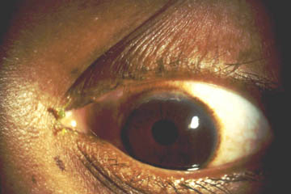
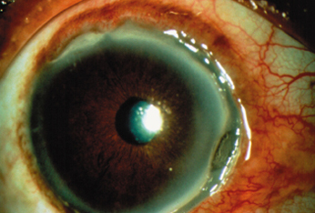
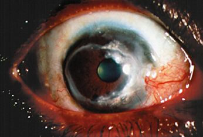
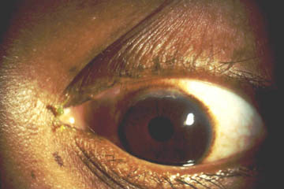
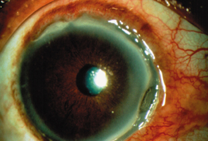
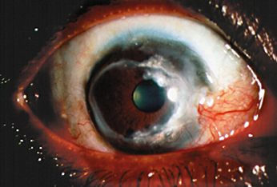

Mooren's ulcer
* Định nghĩa:
+ Loét Mooren  Loét Mooren ở vùng rìa cực trên  Loét tiến triển chiếm 4/3 vùng rìa  Loét lan rộng vào trung tâm giác mạc
+ Loét Mooren

Loét Mooren ở vùng rìa cực trên

Loét tiến triển chiếm 4/3 vùng rìa

Loét lan rộng vào trung tâm giác mạc